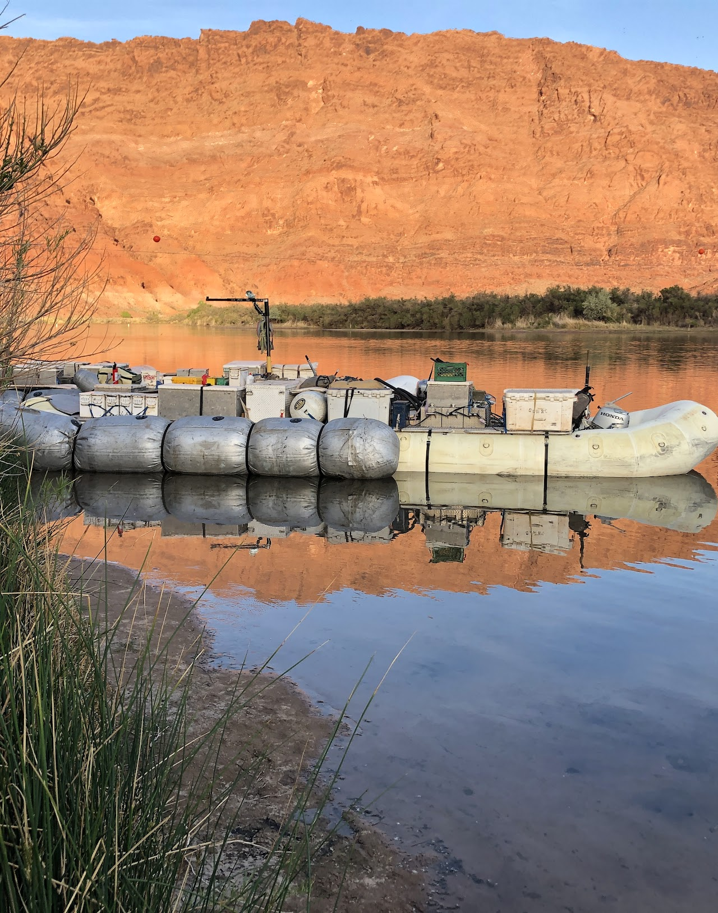

Projects
AEOLIAN SALTATION CLOUD
At the ASU wind tunnel, I conducted a series of experiments using high-speed cameras, high-powered laser, and Particle Tracking Velocimetry (PTV) to quantify sand particle trajectories and characteristics of near-surface sand transport in saltation over various speeds and both flat and rippled beds. PTV was successful in detecting sand grain trajectories under different wind speeds and bed surface conditions. With increasing wind speed, resultant transport, and ripple development, we find important changes in the particle velocity distributions, modes of transport, and particle-bed interactions. These results help us address the discrepancies between predicted and observed transport rates.
NAVAL RESEARCH LAB
As a physical scientist with the Naval Research Lab, I've had the privilege to contribute to multiple research projects exploring inner-self and coastal sediment transport. Including the Aeolian Transport and Turbulence Experiment (ATTEX) at Wallops Island and the Multiphase Transport Experiment (MPTEX) off-shore of Ocean City, MD.
INTERACTIONS BETWEEN FLUVIAL AND AEOLIAN PROCESSES
In April 2022, I was honored to be a volunteer researcher with the Grand Canyon Monitoring and Research Center and U.S. Geological Survey studying the Colorado River Dunes. In 2024, I’ll be continuing this work as a Mendenhall Postdoctoral Fellow. This work aims to develop novel model workflows to predict the aeolian transport of sand or dust from subaerially exposed river-sourced sediment as a function of the use and regulation of Colorado River water supply.

EXPLORING PIEDMONT INCISION USING GEOMORPHIC GIS ANALYSIS & NUMERICAL MODELING
In northeastern sonoran desert, ephemeral channels incise into the piedmonts This tectonically quiescent region experienced slow aggradation as the closed basins filled throughout the Pliocene. Then a wave aggradation also occurred with river integration during Quaternary. With the ongoing aggradation the expectation would be to see channel infilling on pediments and alluvial fans entering these basins. However, various piedmonts in the area, including the Sierra Estrella range, show varying degrees of incision. This paper explores a new hypotheses to explain piedmont incision despite rising base levels. We hypothesized that a massive lateral shift in base level to the toes desert piedmonts could be a potential explanation for the channel incision. Our methods include 1) morphometric analyses of the Sierra Estrella bajadas and 2) thought exercise of modeling a pediment longitudinal profile as a 1D diffusive system,
LINKING PARTICLE TRAJECTORIES TO CHANGES IN BEDFORM 3-DIMENSIONALITY
The emergence and organization of subaqueous bedforms in sandy rivers play a significant role in sediment flux, flood stage control, and stratigraphic record construction. Previous work is largely limited to a 2D streamwise framework; however, natural fluvial dunes display significant 3-dimensionality. This ongoing work evaluates grain-scale transport, bedform evolution, and fluid characteristics to assess the relative importance of lateral and longitudinal fluxes on the migration and deformation of sandy bedforms under various transport conditions.